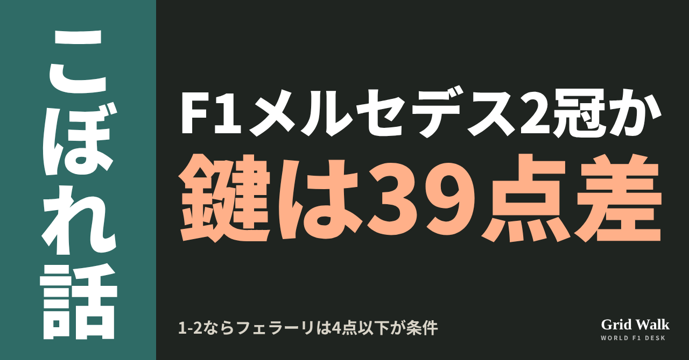
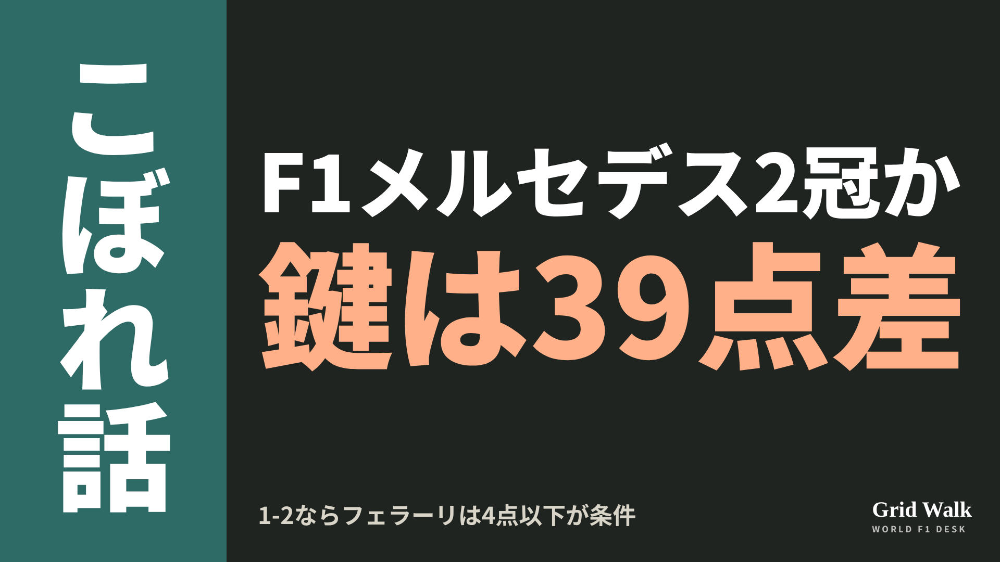
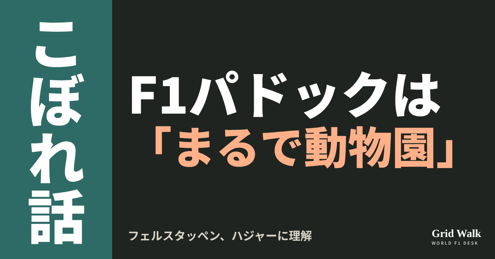
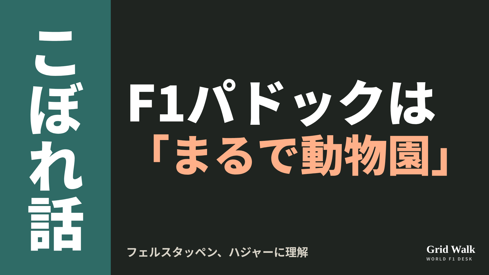

<meta charset="utf-8"><title>11/2未明のコラム note貼り付け</title>
<style>
/* one column of numbered paste steps; text steps vs image steps differ by marker */
:root{--bg:#F5F4F0;--card:#FFFFFF;--ink:#1D2321;--mute:#5F665F;--line:#DCDAD2;--btn:#1F5FBF;--btnok:#2E8B4F;--img:#E9F3EC;--imgink:#22663B;--sans:'IBM Plex Sans JP','Hiragino Sans','Noto Sans JP',sans-serif}
@media (prefers-color-scheme:dark){:root:not([data-theme="light"]){--bg:#171A19;--card:#202423;--ink:#ECEDE8;--mute:#A3AAA2;--line:#343937;--btn:#4D8BE6;--btnok:#3FA866;--img:#1E2C23;--imgink:#8FD3A6;color-scheme:dark}}
:root[data-theme="dark"]{--bg:#171A19;--card:#202423;--ink:#ECEDE8;--mute:#A3AAA2;--line:#343937;--btn:#4D8BE6;--btnok:#3FA866;--img:#1E2C23;--imgink:#8FD3A6;color-scheme:dark}
body{background:var(--bg);color:var(--ink);font-family:var(--sans);font-size:15px;line-height:1.75;padding:20px 16px 60px}
main{max-width:680px;margin:0 auto;display:grid;gap:28px}
header h1{font-size:22px;margin:0 0 6px;text-wrap:balance}
header p{margin:0;color:var(--mute);font-size:14px}
nav{display:flex;gap:8px;flex-wrap:wrap;margin-top:12px}
nav a{border:1px solid var(--line);border-radius:999px;padding:4px 14px;color:var(--ink);text-decoration:none;font-size:14px;background:var(--card)}
.part h2{font-size:18px;line-height:1.5;margin:0 0 12px;text-wrap:balance;display:flex;gap:10px;align-items:baseline;flex-wrap:wrap}
.tag{font-size:13px;background:var(--ink);color:var(--bg);border-radius:6px;padding:1px 9px}
.steps{list-style:none;margin:0;padding:0;display:grid;gap:12px}
.st{background:var(--card);border:1px solid var(--line);border-radius:12px;padding:12px;min-width:0}
.hd{display:flex;align-items:center;gap:8px;margin-bottom:8px}
.no{width:26px;height:26px;border-radius:50%;background:var(--btn);color:#fff;display:inline-flex;align-items:center;justify-content:center;font-size:13px;font-weight:700;flex:0 0 26px}
.im .no{background:var(--btnok)}
.hd em{font-style:normal;font-size:12px;background:var(--img);color:var(--imgink);border-radius:6px;padding:0 8px}
.bx{font-size:13.5px;line-height:1.7;border:1px solid var(--line);border-radius:8px;padding:8px 10px;max-height:110px;overflow:auto;overflow-wrap:anywhere}
.bx.tall{max-height:150px}.bx p{margin:0 0 6px}.bx h2{font-size:14px;margin:8px 0 4px}.bx a{color:var(--btn)}
.st img{display:block;width:100%;max-width:100%;border:1px solid var(--line);border-radius:8px}
.sub{font-size:12.5px;color:var(--mute);margin:6px 0 0}
.cp{width:100%;margin-top:8px;padding:12px;border:0;border-radius:10px;background:var(--btn);color:#fff;font:600 15px var(--sans);cursor:pointer}
.cp.ok{background:var(--btnok)}.cp.dl{background:var(--btnok)}.cp:focus-visible{outline:3px solid var(--ink);outline-offset:2px}
.xh{font-size:15px;margin:20px 0 10px}
.fb{font-size:13px;line-height:1.7;margin:8px 0 0;padding:8px 10px;border-radius:8px;background:var(--img);color:var(--imgink)}
.opts{display:grid;grid-template-columns:repeat(auto-fill,minmax(240px,1fr));gap:10px}
.opt{min-width:0}.opt img{display:block;width:100%;border:1px solid var(--line);border-radius:8px}
.ol{display:flex;align-items:center;gap:8px;margin-top:6px}.ol b{font-size:13px;flex:0 0 auto}.ol .on{font-size:12.5px;color:var(--mute);flex:1;min-width:0}.ol .cp{width:auto;flex:0 0 auto;padding:9px 14px}.ol .cp{margin:0;padding:9px}
.toast{font-size:13px;color:var(--mute);margin-top:6px}
</style>
<main><header><h1>11/2未明のコラム note貼り付け</h1><p>いま公開済みは2本です。青い番号は文章、緑は画像です。</p><nav><a href="#p1">1</a><a href="#p2">2</a></nav></header><section class="part" id="p1"><h2><span class="tag">OFF GRID</span>メルセデス、メキシコで2冠なるか　条件はフェラーリより39点以上多く</h2><p class="sub">サイトに公開：03:07</p><ol class="steps">
<li class="st im"><div class="hd"><span class="no">1</span><b>見出し画像</b><em>画像</em></div><button class="cp dl" data-img="img/mercedes-double-title-20261102.png" data-name="mercedes-double-title-20261102_見出し画像.png">ダウンロード</button></li>
<li class="st"><div class="hd"><span class="no">2</span><b>タイトル</b></div><div class="bx" id="p1t">メルセデス、メキシコで2冠なるか　条件はフェラーリより39点以上多く</div><button class="cp" data-plain="p1t">タイトルをコピー</button></li>
<li class="st"><div class="hd"><span class="no">3</span><b>本文</b></div><div class="bx tall" id="p1r"><p>日本時間2日早朝の決勝で、アントネッリ（メルセデス）の初めての王座が決まるかもしれません。ただ、メルセデスにはもう一つ、決められるかもしれないタイトルがあります。チームの王座、コンストラクターズ選手権です。条件は、このレースでフェラーリより39点以上多く取ること。オランダのGPblogが示したこの数字を、F1公式の順位表と規則で確かめました。</p><p>計算に使ったF1公式の順位表と規則、オランダとブラジルの元の記事へのリンクはサイトで → <a href="https://f1gridwalk.github.io/lens/mercedes-double-title-20261102/?utm_source=note&amp;utm_campaign=mercedes-double-title-20261102">https://f1gridwalk.github.io/lens/mercedes-double-title-20261102/?utm_source=note&amp;utm_campaign=mercedes-double-title-20261102</a></p><p>アントネッリ自身は、決勝で9位以内なら王座が決まります。10位以下の場合も含めた条件は、コラム（https://f1gridwalk.github.io/lens/antonelli-title-mexico-20261026/ ）とDEEP（https://f1gridwalk.github.io/deep/champion-when/ ）で。</p><h2>残り4戦で、取れるのは最大172点</h2><p>F1公式サイトのチーム順位表（10月25日のアメリカGPまで）では、メルセデスが607点、フェラーリが474点で、差は133点です。3位のレッドブルと4位のマクラーレンは355点。残り5戦の最大215点を足しても570点なので、メルセデスを追えるのはもうフェラーリだけです。</p><p>決勝の点は1位25点、2位18点、3位15点と続き、10位の1点まで。最速ラップの1点は2025年からなくなりました。1チームが1レースで取れる最大は、1位と2位の43点です。今季6回のスプリントは10月のシンガポールで終わっていて、メキシコのあとはブラジル、ラスベガス、カタール、アブダビの4戦。カレンダーどおりに行われれば、残りは最大172点です。</p><p>つまり、メキシコを終えて172点以上の差があれば決まりです。133点から172点までは、あと39点。ちょうど172点差の場合は、フェラーリが残り4戦すべてで1-2を決め、メルセデスが無得点なら並びます。点が並ぶと優勝回数の多いほうが上で、今季ここまでの優勝はメルセデス12回、フェラーリ2回。並んでもメルセデスが上なので、39点で足ります。チームの王座が決まる形では、メルセデスの2台がどちらも3位以内に入るので、アントネッリの王座も必ず決まります。</p><h2>1-2でも、フェラーリが5点以上取れば持ち越し</h2><p>フェラーリを39点以上上回る形は、2つしかありません。メルセデスが1位と2位（43点）なら、フェラーリは2台合わせて4点以下。8位の1台だけ（4点）ならぎりぎり決まり、1台が7位（6点）に入れば持ち越しです。1位と3位（40点）なら、フェラーリは1点以下。入賞は、1台が10位に入る1点までです。</p><p>1位と4位（37点）や、2位と3位（33点）では届きません。また、決勝が予定の距離の75％に届かずに終わると点が減り、1-2でも最大33点で届きません。</p><h2>前の4台は、赤と銀が交互に</h2><p>FIAの暫定スターティンググリッド（文書60）は、1番ハミルトン、2番ラッセル、3番ルクレール、4番アントネッリ。前の4台は、フェラーリとメルセデスが交互に並んでいます。予選の様子は、サイトの要約（https://f1gridwalk.github.io/news/en-crash-hamilton-pole-mexico/ ）で。</p><p>GPblogの見出しは「フェラーリはどうすれば、メキシコシティでのメルセデスの完璧な一日をまだ台なしにできるか」。ハミルトンがポールを取ったことなどを挙げて、フェラーリがそこまで少ない点に終わるには「よほど運が悪くないといけない」と書いています。</p><p>ブラジルのGrande Prêmio（英語版）も10月29日に同じ39点と2つの形を示し、並んだ場合については「メルセデスは優勝回数で、すでに決定的な優位にある」。決まれば、メルセデスにとって9回目のコンストラクターズ王座で（Grande Prêmio）、2021年以来になります（GPblog）。</p><p>編集部としては、同じ日に2冠になるかどうかは、4番グリッドのアントネッリだけでなく、2番グリッドのラッセルと、フェラーリ2台の順位にもかかっていると見ています。</p><p><strong>ドライバーとチームの王座、同じ日にまとめて決まるのと、別々の日に決まるのと、どちらが見たいですか？</strong></p><p>━━━━━━━━━━</p><p><strong>F1 Grid Walk では、世界のF1ニュースを毎日日本語でまとめています。</strong></p><p>海外の記事の要約を、毎日載せています。</p><p><a href="https://f1gridwalk.github.io/">https://f1gridwalk.github.io/</a></p><p>ほかの海外記事も読みたい方は、F1 Grid Walkへ。</p><p><a href="https://f1gridwalk.github.io/lens/mercedes-double-title-20261102/">https://f1gridwalk.github.io/lens/mercedes-double-title-20261102/</a></p><p>━━━━━━━━━━</p><p><a href="https://www.gpblog.com/en/news/how-ferrari-could-still-ruin-mercedes-perfect-day-in-mexico-city">出典：GPblog（オランダ）</a></p><p><a href="https://grandepremio.com/en/f1/how-can-mercedes-win-the-2026-f1-constructors-championship-in-mexico/">出典：Grande Prêmio（英語版）（ブラジル）</a></p><p><a href="https://www.formula1.com/en/results/2026/team">出典：F1公式サイト（イギリス）</a></p><p><a href="https://www.formula1.com/en/results/2026/races">出典：F1公式サイト（イギリス）</a></p><p><a href="https://www.formula1.com/en/racing/2026">出典：F1公式サイト（イギリス）</a></p><p><a href="https://www.formula1.com/en/latest/article/formula-1-and-fia-announce-2026-sprint-calendar.3PyLPAazrBNe8kQIS3wOfY">出典：F1公式サイト（イギリス）</a></p><p><a href="https://www.formula1.com/en/latest/article/the-beginners-guide-to-the-f1-constructors-championship.66nTfWSqrUYv3bnbosPkHV">出典：F1公式サイト（イギリス）</a></p><p><a href="https://www.formula1.com/en/latest/article/from-fastest-lap-to-increased-rookie-running-7-rule-changes-you-need-to-know.pgdSMDnDyv1aJUgtcKPp6">出典：F1公式サイト（イギリス）</a></p><p><a href="https://api.fia.com/system/files/documents/fia_2026_f1_regulations_-_section_a_general_provisions_-_iss_03_-_2026-06-25.pdf">出典：FIA（国際）</a></p><p><a href="https://www.fia.com/system/files/decision-document/2026_mexico_city_grand_prix_-_provisional_starting_grid.pdf">出典：FIA（国際）</a></p></div><button class="cp" data-rich="p1r">本文をコピー</button></li>
<li class="st"><div class="hd"><span class="no">4</span><b>ハッシュタグ</b></div><div class="bx" id="p1h">#F1 #F1jp #メルセデス #フェラーリ #アントネッリ #メキシコシティGP #コンストラクターズ #F1タイトル争い #F1こぼれ話 #OFFGRID</div><button class="cp" data-plain="p1h">タグをコピー</button></li>
</ol><h3 class="xh">X</h3><ol class="steps">
<li class="st im"><div class="hd"><b>X用の画像</b><em>画像</em></div><button class="cp dl" data-img="img/x_mercedes-double-title-20261102.png" data-name="x_mercedes-double-title-20261102.png">ダウンロード</button></li>
<li class="st"><div class="hd"><b>① noteをシェアするときの文</b></div><div class="bx" id="p1x0">メルセデスはメキシコでチームの王座も決められるのか。条件はフェラーリより39点以上多く取ること。1-2ならフェラーリは4点以下、1位と3位なら1点以下。計算をnoteにまとめました #F1jp #メルセデス</div><button class="cp" data-plain="p1x0">コピー</button></li>
<li class="st"><div class="hd"><b>② ①への返信</b></div><div class="bx" id="p1x1">ほかの海外記事も読みたい方は、F1 Grid Walkへ。
https://f1gridwalk.github.io/lens/mercedes-double-title-20261102/?utm_source=x&amp;utm_campaign=mercedes-double-title-20261102</div><button class="cp" data-plain="p1x1">コピー</button></li>
<li class="st"><div class="hd"><b>③ ②への返信</b></div><div class="bx" id="p1x2">毎日の海外F1ニュースは、日本語でこちらにまとめています。
https://f1gridwalk.github.io/</div><button class="cp" data-plain="p1x2">コピー</button></li>
</ol></section><section class="part" id="p2"><h2><span class="tag">OFF GRID</span>フェルスタッペン「ここはまるで動物園」　ハジャーの行動に理解</h2><p class="sub">サイトに公開：03:07</p><ol class="steps">
<li class="st im"><div class="hd"><span class="no">1</span><b>見出し画像</b><em>画像</em></div><button class="cp dl" data-img="img/verstappen-paddock-zoo-20261102.png" data-name="verstappen-paddock-zoo-20261102_見出し画像.png">ダウンロード</button></li>
<li class="st"><div class="hd"><span class="no">2</span><b>タイトル</b></div><div class="bx" id="p2t">フェルスタッペン「ここはまるで動物園」　ハジャーの行動に理解</div><button class="cp" data-plain="p2t">タイトルをコピー</button></li>
<li class="st"><div class="hd"><span class="no">3</span><b>本文</b></div><div class="bx tall" id="p2r"><p>「ここはまるで動物園です」。メキシコシティGPのパドックで来場者を押し、審査委員（スチュワード）から正式な警告を受けたチームメイトのアイザック・ハジャーについて、マックス・フェルスタッペンはこう話しました。ハジャーの行動は「100％理解できる」とも。問われているのは、ドライバーとファンの距離です。</p><p>FIAの決定文書と、RacingNews365（オランダ語）・Speedcafeの元の記事へのリンクはサイトで → <a href="https://f1gridwalk.github.io/lens/verstappen-paddock-zoo-20261102/?utm_source=note&amp;utm_campaign=verstappen-paddock-zoo-20261102">https://f1gridwalk.github.io/lens/verstappen-paddock-zoo-20261102/?utm_source=note&amp;utm_campaign=verstappen-paddock-zoo-20261102</a></p><h2>審査委員が挙げた「警備」</h2><p>出来事は現地10月30日（金）のFP1前、パドックでのことです。オーストラリアのSpeedcafeによると、自撮りを求めて近づいた来場者を、ハジャーが押しのけました。</p><p>審査委員は土曜、ハジャーとチームの話を聞き、映像も確かめたうえで、FIAの国際モータースポーツ競技規則12.2.1.lに反するとしました。ただ、罰を軽くする事情として5つを挙げ、正式な警告にとどめています。招かれていない、かなり攻撃的な行動に反応したものだったこと、混んだ場所を通ってFP1に向かおうとしていたこと、十分な警備がいなかったこと、相手が本人の同意なくパーソナルスペースに入っていたこと、ドライバーがパドックを移動するときに抱えてきた問題全般、です。</p><blockquote><p>「警備の人が1人、彼（ハジャー）の後ろを歩いていたが、間に入って、ドライバーのプライベートな空間への侵入に等しい行為を防ぐことはできなかった」（審査委員の決定文書、FIA。かっこ内は編集部が補いました）</p></blockquote><p>ハジャー本人の受け止めは、サイトのニュース要約 https://f1gridwalk.github.io/news/en-crash-hadjar-warning-reality-show/ にあります。</p><h2>フェルスタッペン「ここはまるで動物園」</h2><p>フェルスタッペンは、オランダのRacingNews365などの取材にこう答えました（オランダ語から訳しています）。</p><blockquote><p>「もちろん、彼の行動は理解できます。誰かに触られたり、つかまれそうになったりするのは、本当にいやなものです」「僕自身は（ファンを）押したことはまだ一度もありません。でも、そうなりかけたことは本当によくあります」（フェルスタッペン、RacingNews365／オランダ。かっこ内はRacingNews365の補足）</p></blockquote><p>問題は主にファンの敬意のなさなのか、と聞かれるとこう続けました。</p><blockquote><p>「ほとんどどこでも起きています。前から何度も言ってきましたが、ここはまるで動物園です」「でも、パドックにこれだけ多くの人を入れたら、そうなります。そうなったら、もうどうにもなりません」（フェルスタッペン、RacingNews365／オランダ）</p></blockquote><p>ハジャーと話したかを聞かれた短い答えは、こう結ばれていました。</p><blockquote><p>「本当にいらいらすることですが、彼がしたことは100％理解できます」（フェルスタッペン、RacingNews365／オランダ）</p></blockquote><h2>「動物園」は前にも</h2><p>オランダのF1Maximaalは10月20日、フェルスタッペンがオランダ紙デ・テレフラーフにこう話したと伝えていました。</p><blockquote><p>「ええ、まるで動物園です」「自分たちのホスピタリティの中にも、何かを求めてくるゲストがたくさんいます」「もちろん彼らに悪気はありません。でも僕も、ずっと煩わされることなく休めないといけない」（フェルスタッペン、デ・テレフラーフ／オランダ。F1Maximaalから）</p></blockquote><p>オランダのGPblogは、パドックパスを買う人も、チームなどが招くゲストも増えている、と書いています（パドックの説明は https://f1gridwalk.github.io/deep/rules/paddock/ ）。</p><p>編集部としては、ファンとの近さもF1の人気を支えるものだと見ています。ただ、審査委員が警備の不足やパドックを移動するときの問題まで理由に挙げたことは、ドライバー1人の問題ではない、というしるしにも読めます。</p><p><strong>パドックに入る人の数と、ドライバーとの距離。あなたは、今くらいのにぎやかさがいいと思いますか、それとも人を絞るべきだと思いますか？</strong></p><p>━━━━━━━━━━</p><p><strong>F1 Grid Walk では、世界のF1ニュースを毎日日本語でまとめています。</strong></p><p>海外の記事の要約を、毎日載せています。</p><p><a href="https://f1gridwalk.github.io/">https://f1gridwalk.github.io/</a></p><p>ほかの海外記事も読みたい方は、F1 Grid Walkへ。</p><p><a href="https://f1gridwalk.github.io/lens/verstappen-paddock-zoo-20261102/">https://f1gridwalk.github.io/lens/verstappen-paddock-zoo-20261102/</a></p><p>━━━━━━━━━━</p><p><a href="https://www.fia.com/system/files/decision-document/2026_mexico_city_grand_prix_-_infringement_-_car_6_-_misconduct.pdf">出典：FIA（国際）</a></p><p><a href="https://racingnews365.nl/max-verstappen-reageert-op-veelbesproken-duw-en-waarschuwing-isack-hadjar">出典：RacingNews365（オランダ）</a></p><p><a href="https://speedcafe.com/f1-news-2026-mexico-city-grand-prix-isack-hadjar-fan-incident-shove-verdict-what-happened/">出典：Speedcafe（オーストラリア）</a></p><p><a href="https://www.f1maximaal.nl/formule-1/verstappen-moet-zich-steeds-vaker-terugtrekken-het-is-net-een-dierentuin">出典：F1Maximaal（オランダ）</a></p><p><a href="https://www.gpblog.com/en/news/verstappen-backs-hadjar-after-paddock-incident-its-incredibly-annoying">出典：GPblog（英語版）（オランダ）</a></p></div><button class="cp" data-rich="p2r">本文をコピー</button></li>
<li class="st"><div class="hd"><span class="no">4</span><b>ハッシュタグ</b></div><div class="bx" id="p2h">#F1 #F1jp #フェルスタッペン #ハジャー #レッドブル #メキシコシティGP #パドック #F1こぼれ話 #OFFGRID</div><button class="cp" data-plain="p2h">タグをコピー</button></li>
</ol><h3 class="xh">X</h3><ol class="steps">
<li class="st im"><div class="hd"><b>X用の画像</b><em>画像</em></div><button class="cp dl" data-img="img/x_verstappen-paddock-zoo-20261102.png" data-name="x_verstappen-paddock-zoo-20261102.png">ダウンロード</button></li>
<li class="st"><div class="hd"><b>① noteをシェアするときの文</b></div><div class="bx" id="p2x0">ファンを押したハジャーは正式な警告。チームメイトのフェルスタッペンは「ここはまるで動物園」と理解を示しました。審査委員が挙げた5つの理由もnoteにまとめました #F1jp #フェルスタッペン</div><button class="cp" data-plain="p2x0">コピー</button></li>
<li class="st"><div class="hd"><b>② ①への返信</b></div><div class="bx" id="p2x1">ほかの海外記事も読みたい方は、F1 Grid Walkへ。
https://f1gridwalk.github.io/lens/verstappen-paddock-zoo-20261102/?utm_source=x&amp;utm_campaign=verstappen-paddock-zoo-20261102</div><button class="cp" data-plain="p2x1">コピー</button></li>
<li class="st"><div class="hd"><b>③ ②への返信</b></div><div class="bx" id="p2x2">毎日の海外F1ニュースは、日本語でこちらにまとめています。
https://f1gridwalk.github.io/</div><button class="cp" data-plain="p2x2">コピー</button></li>
</ol></section></main><script>
function done(b,msg){const t=b.dataset.t||b.textContent;b.dataset.t=t;b.classList.add('ok');b.textContent=msg||'コピーしました';setTimeout(()=>{b.classList.remove('ok');b.textContent=t},2000)}
function selectEl(el){const r=document.createRange();r.selectNodeContents(el);const s=getSelection();s.removeAllRanges();s.addRange(r)}
async function rich(el,b){
  try{await navigator.clipboard.write([new ClipboardItem({'text/html':new Blob([el.innerHTML],{type:'text/html'}),'text/plain':new Blob([el.innerText],{type:'text/plain'})})]);done(b);return}catch(e){}
  selectEl(el);let ok=false;try{ok=document.execCommand('copy')}catch(e){}
  if(ok){getSelection().removeAllRanges();done(b)}else{done(b,'選択しました。コピーしてください')}}
async function plain(el,b){
  try{await navigator.clipboard.writeText(el.innerText);done(b);return}catch(e){}
  selectEl(el);let ok=false;try{ok=document.execCommand('copy')}catch(e){}
  if(ok){getSelection().removeAllRanges();done(b)}else{done(b,'選択しました。コピーしてください')}}
let dlns=null;(async()=>{try{dlns=await window.claude?.use?.("downloads")}catch(e){dlns=null}})();
async function img(src,b){
  b.dataset.t=b.dataset.t||b.textContent;
  if(!dlns){try{dlns=await window.claude?.use?.("downloads")}catch(e){}}
  if(!dlns){b.textContent='ダウンロードできませんでした';setTimeout(()=>{b.textContent=b.dataset.t},3500);return}
  try{const blob=await fetch(src).then(r=>r.blob());b.textContent='保存の確認を開いています…';
    await dlns.save({filename:b.dataset.name,data:blob});done(b,'ダウンロードしました')}
  catch(e){const c=e&&e.code;b.textContent=c==='declined'?'キャンセルしました':c==='rate_limited'?'少し待ってからもう一度押してください':'ダウンロードできませんでした';setTimeout(()=>{b.textContent=b.dataset.t},3500)}}
document.querySelectorAll('.cp').forEach(b=>b.addEventListener('click',()=>{
  if(b.dataset.rich)rich(document.getElementById(b.dataset.rich),b);
  else if(b.dataset.plain)plain(document.getElementById(b.dataset.plain),b);
  else img(b.dataset.img,b)}));
</script>